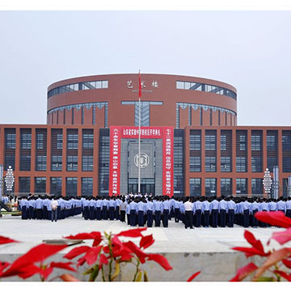

广州市惠声电子科技有限公司是一家致力于公共广播、数字会议、专业音响、智能中控等设备的设计、生产、销售、专业咨询服务为一体的综合性高科技企业。公司成立于1997年，工厂占地面积12000平方米，总部座落在素有中国音响产业基地之称的广州番禺。
公司自成立之初就秉承“内在价值，科技体现”的理念，并以“惠达天下，声扬四海”为已任。在全体惠声人的共同努力下不断推陈出新，在音频扩声领域的研发、生产与销售过程中取得了众多卓有成效的成绩。同时公司先后导入ISO9001质量管理体系、ISO14001环境管理体系和ERP物控管理系统，全方面保证产品在设计、生产、检验都得到严格的管制，向客户提供高科技、高品质、高稳定、高性价比的产品。
与此同时，“惠声”在追求高科技、高品质的产品基础之上，于2007年初始导入专业的“品牌”方案解决及服务系统——TOPPA（公共广播）、KEXELL（专业扩声、会议、中控），并成立了独立的品牌咨询和营销中心。
在营销策略上，我们以“立足国内市场、开拓国际市场”的营销理念为指导，在全体惠声人坚持不懈的努力下，现已让TOPPA、KEXELL品牌产品广泛应用于：政府机关、学校、酒店、医院、监狱、办公大楼、体 育场馆、超市、公园、旅游景点、步行街、广场、车站、码头、工厂企业、超市、机场等各种场所。
同时，我们可提供相关工程的——前期方案咨询、方案设计、施工指导、设备调试、专业培训等一系列的服务。我们以“客户的满意”为最高行动指导方针，因为，我们坚信：“您督促，我成长”、“您满意，我收获”才是真正的双赢！
“惠声”感恩有您-------一路的选择、一路的支持！我们将再接再励——向更高、更强的企业方向发展！
会议、中控、专业扩声(KEXELL-科赛尔 品牌)
“KEXELL”是广州市惠声电子科技有限公司在中国大陆地区合法注册的品牌源自丹麦的一品牌商标，“KEXELL”是我司定位于会议、中控、专业扩声的品牌，我们根据我司所服务的客户类型将其同样定位于中、高档次，并根据国内市场会议室现场实际扩声需求，我们针对性的研发和生产了一套具有特色性的产品，并提供配套完善的服务系统。
★会议系统：
无线会议系统：无线调频会议系统KE-590（视频跟踪、主席机1只、代表机200只）、无线一拖四KE-540、无线一拖八KE-580
有线手拉手会议系统： KE-100M（会讨型）、KE-200M(会讨、视像跟踪)、KE-300M（会讨、视像跟踪、投票表决、会议签到等）
同声传译系统：KE-500M系列是一套为多语种会议提供翻译的语音会议系统，采用红外线进行多路语音传输，是目前市场上无线语言分配系统中最常用的传输方式。红外线传输技术使系统具有较强的保密性和抗干扰的特点，内置高保真电路，音质清晰完美。本系统可以同时调制发射6种语言，覆盖范围广。
★中控、矩阵系统
传统中控：KE-1100(自带矩阵)、KE-1000(不带矩阵）
WIFI中控：KE-1200(不带矩阵）。
矩阵：AV、VGA、RGB、HDMI、DVI、色插及高清混合矩阵等。
★专业扩声系统
专业音箱:TX系列全频音箱（10寸、12寸、15寸）、T系列全频音箱（10寸、12寸、15寸）、F系列全频音箱（10寸、12寸、15寸）、TC系列全频音箱(6寸、8寸)、S系列会议吸顶(6寸、8寸)、低音音箱（15寸、18寸、双18寸）、无源线阵、有源线阵等。
专业功放：EA系列、TA系列、PA等系列。
调音台：EX系列（带编组）、MX(带效果)、DM、MD等系列调台
周边设备：均衡器、反馈抑制器、处理器、效果器、分频器、分信器、压限器等。
公共广播（TOPPA-拓普 品牌）
“TOPPA”是广州市惠声电子科技有限公司在中国大陆地区合法注册的品牌商标，“TOPPA”作为国内公共广播、背景音乐品牌，其定位于中、高档次，可满足不同客户及场所对扩声的需求。
同时，作为国内公共广播品牌的先驱和领导者，我们一直走在科技领域的前沿，配合国内外市场相同领域的发展与需求，我们目前所研发和生产的公共广播、背景音乐主要有以下四套系统：
★传统智能广播（TP-6000）：最简单的广播系统，造价便宜，一般的背景音乐，消防联动广播，都可以轻松搞定，是校园、单位、工厂广播的理想选择。
★MCC集控广播（TP-6800）：技术功能国内领先，性价比高，超强的编程自动控制，内置灵活的音频矩阵，8路输入，32路输出，通过升级扩展以后可以达到128个输出。内置6路可编程控制的电源，外控各种音源设备，实现定时，定点，定节目的自动播放，配合呼叫站可进行远程寻呼广播，可控制32台远程分控寻呼话筒等功能。
★DMS数控广播（TP-8800）：总线制结构，只要一个主机和终端、音源就可以完成点对点可寻址广播，采用网线传输，路线简单，扩展方便，一台主机可带1024个终端，满足不同公共场所需求的广播系统。
★CMC网络化IP广播（TP-9000W）：这是一套基于IP数据网络传输音频扩声系统，它可在同网段的局域网内、跨网关的局域网内或Internet网上使用，IP网络解决了传统广播系统存在的传输距离短，音质不佳，维护管理复杂，互动性能差等问题。
xixixixixixixixixixix
2333333333333333333333